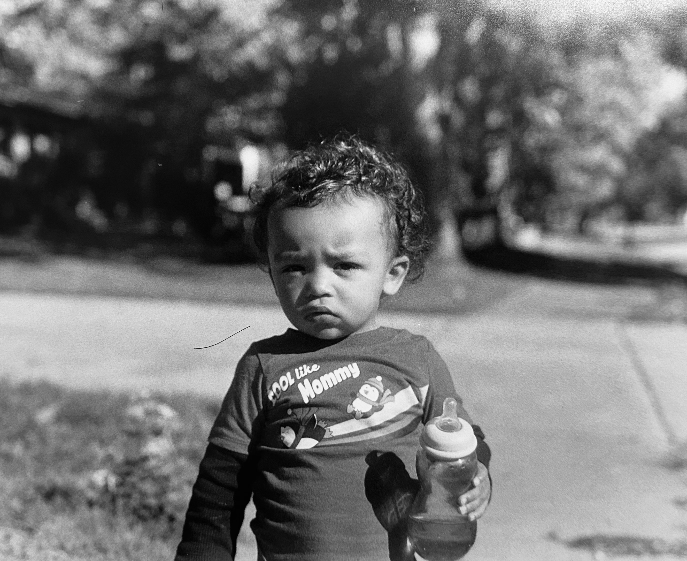
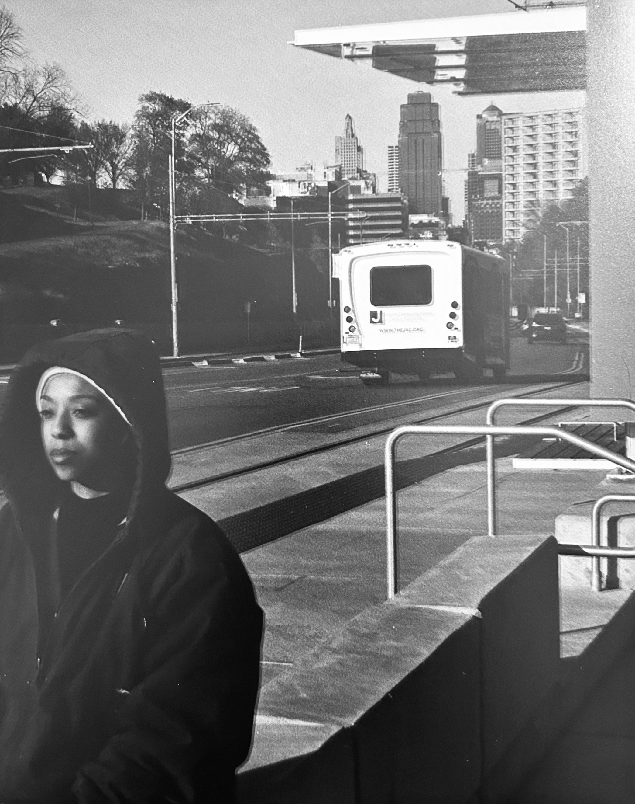
CHAPTER 01
Where It All Started
My imagination is a series of creative ideas on replay, when I was given a 35mm Kodak Film Camera, I first was taken back. Coming from a digital world with updated photgraphy, what was I supposed to do with this?.
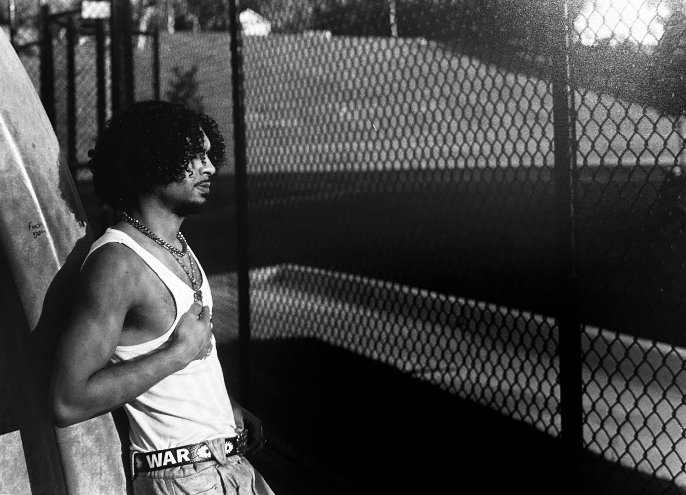
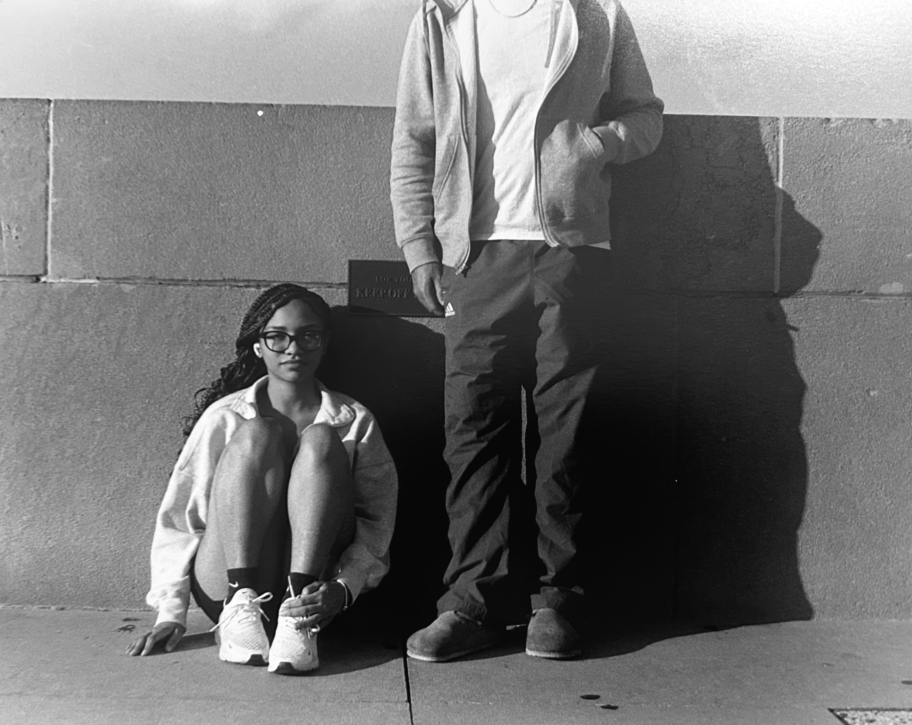
When It Started to Trust
Understanding light was my first obsticle, then understanding space, subjects, envoirments. All played a big role in capturing a moment worth a thousand words. Witha all of that an even bigger portion plays a vital role. Trust. You cannot see what your doing to make corrections, you must trust the process, trust your settings, and trust your vision.
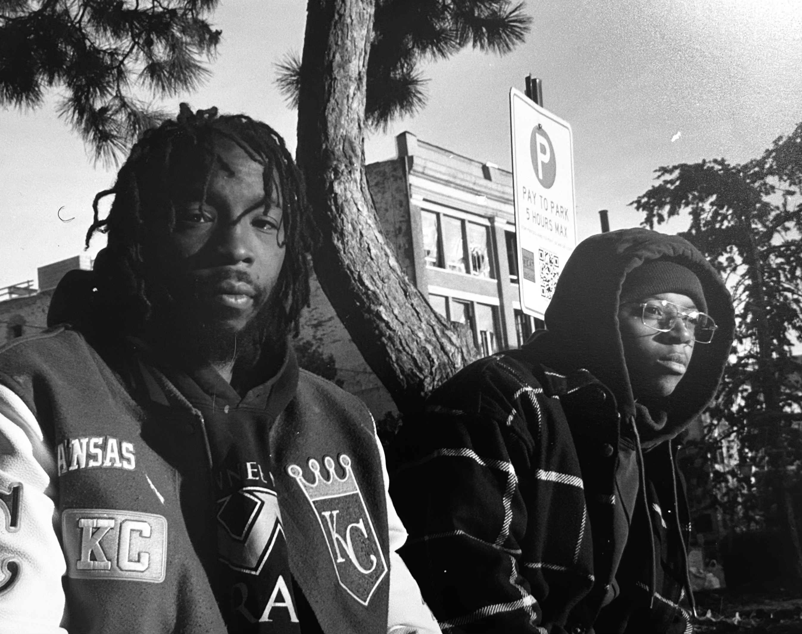
A New Detail
Add a caption or supporting story here.
Another Moment
Introduce the next part of your story.
BETWEEN THE IMAGES
The Story Deepens
This is a dedicated storytelling section. You can write multiple paragraphs here to explain what happened and connect the images.
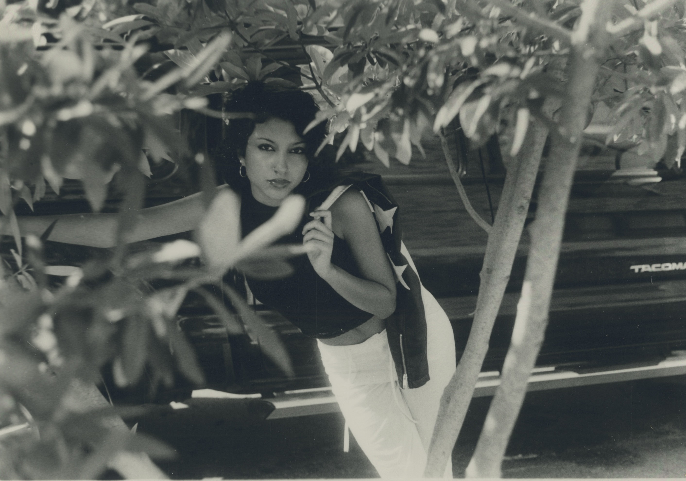
A New Perspective
Continue the narrative here.
Beyond the Image
Use this space to add context, introduce new information, or build suspense before the next image.
What Comes Next
Add your supporting text here.
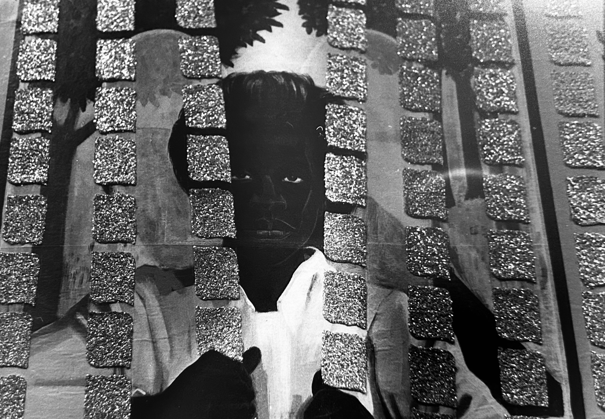
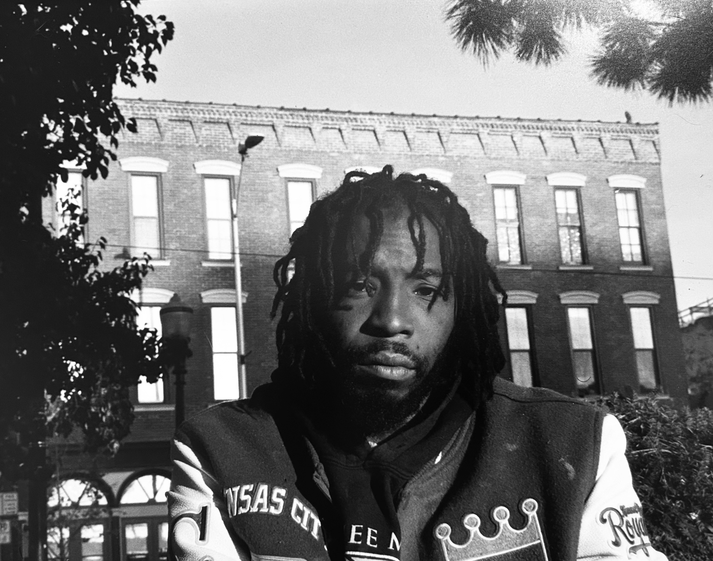
The Turning Point
Give the most important part of your story enough space to breathe.
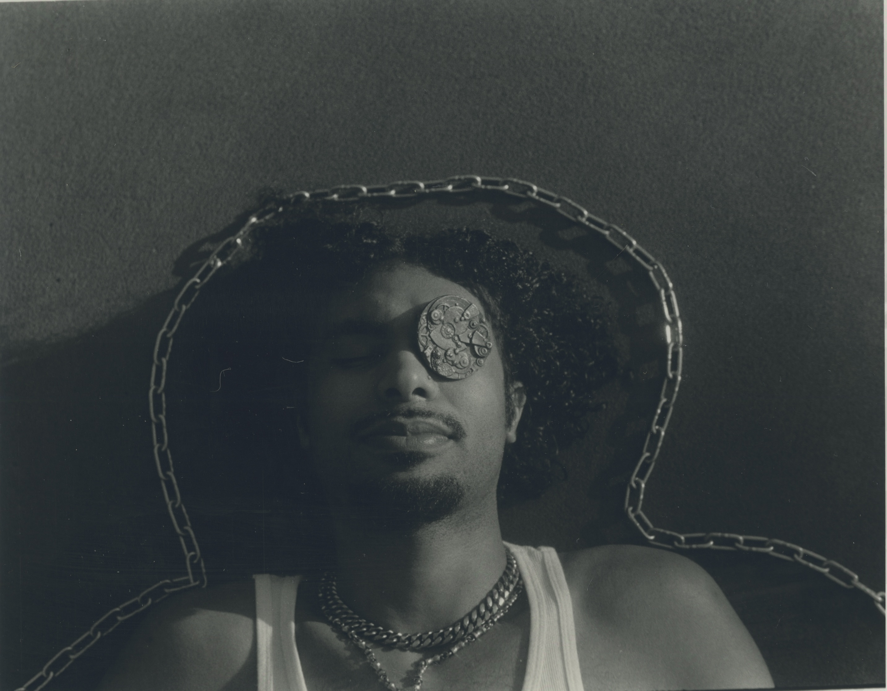
Another Piece of the Story
Explain the significance of this image.
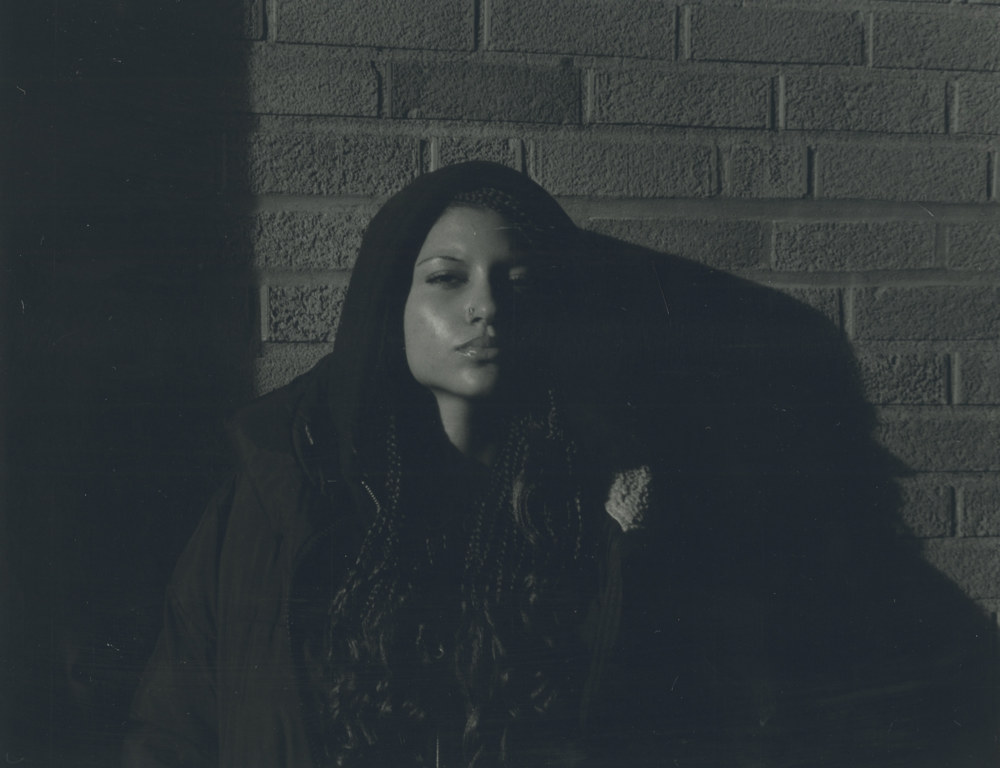
Building Toward the End
Continue your narrative.
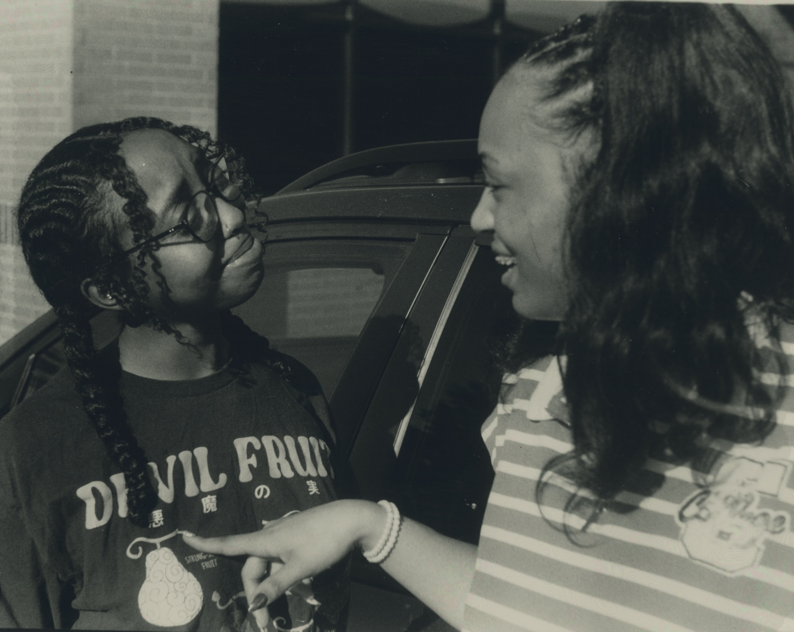
The Final Sequence
Prepare the reader for the conclusion.
What Remains?
Bring your story toward its conclusion.